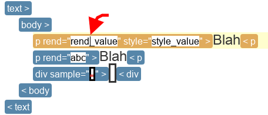
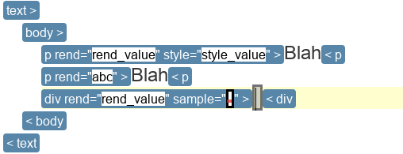
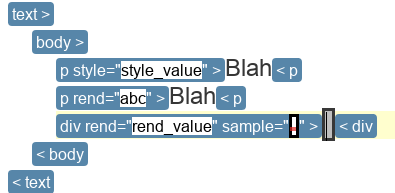
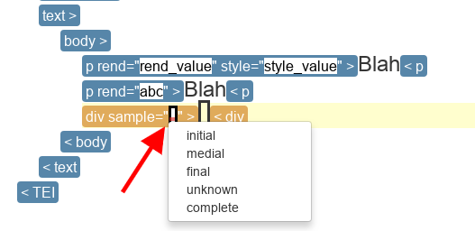
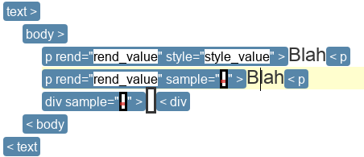
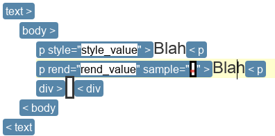
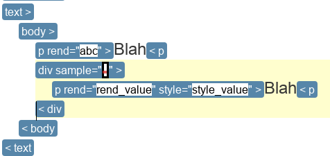
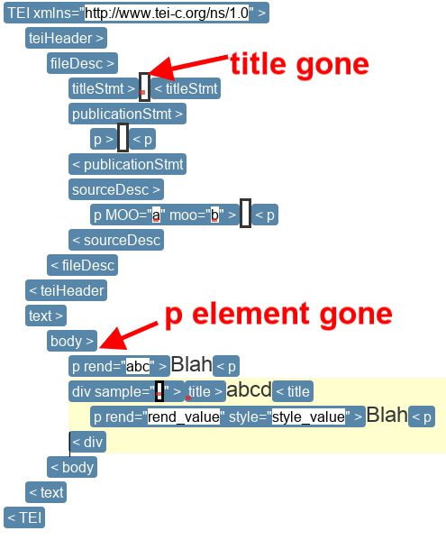

Tutorials¶
Please refer to help_keyboard_shortcut if you need to figure out what keyboard shortcuts to use for various operations.
Unit Selection Mode¶
Note
The operations copy, cut, paste, copy-add and cut-add are only available as keyboard shortcuts. Consult help_keyboard_shortcut for the specific shortcuts that pertain to your platform.
Copying Attributes¶
In this tutorial, you will copy one attribute from one element to another.
Load in your editor the file ./tutorial_data/unit_selection.xml.
Switch to unit selection mode. Either by clicking on the toolbar button, or using the keyboard shortcut.

Move the caret into the value of the
rendattribute of the firstpelement inbody. The specific location in the value does not matter.Copy. You will not see any changes to the document.
Move the caret into the
divelement.
Note
In this example, we move the caret between the start and end label of the
divelement, but you could just as well move the caret in any location inside the start label or the end label of thedivelement, and get the same final result.Paste. The end result should be like in the following figure. The difference from the original document is that the
divelement has acquired a new attributerendwith the valuerend_value.
Cutting Attributes¶
Follow the same steps as the previous tutorial, but in step 4, do a cut instead of a copy. The end result should be like in the following figure.

The difference from end result of the previous tutorial is that the rend
attribute is no longer present on the p element from which it was cut.
Copy-Adding Attributes¶
In this tutorial, you will copy multiple attributes from multiple elements to another element. In order to do this, you will use the copy-add operation.
Load in your editor the file ./tutorial_data/unit_selection.xml.
Switch to unit selection mode. Either by clicking on the toolbar button, or using the keyboard shortcut.

Move the caret into the value of the
rendattribute of the firstpelement inbody. The specific location in the value does not matter.
Copy. You will not see any changes to the document.
Move the caret into the value of the
sampleattribute ofdivelement. The specific location in the value does not matter.Copy-add. You will not see any changes to the document.
Move the caret into the second
pelement inbody.
Note
In this example, we move the caret between the start and end label of the
pelement, but you could just as well move the caret in any location inside the start label or the end label of thepelement, and get the same final result.Paste. The end result should be like in the following figure. The difference from the original document is that the second
pelement inbody:- had its
rendattribute value changed fromabctorend_value, - and has a new
sampleattribute which is empty.
- had its
If you did not get the expected result, one common mistake is doing a copy instead of a copy-add in step 6. Make sure you are doing a copy-add.
Cut-Adding Attributes¶
Follow the same steps as the previous tutorial, but in step 4, do a cut instead of a copy, and in step 6 do as cut-add instead of a copy-add. The end result should be like in the following figure.

The difference from end result of the previous tutorial is that the rend
attribute is no longer present on the p element from which it was cut, and
the sample attribute is no longer present from the div attribute from
which it was cut.
If you did not get the expected result, one common mistake is doing a cut instead of a cut-add in step 6. Make sure you are doing a cut-add.
Copying Elements¶
In this tutorial, you will copy an element.
Load in your editor the file ./tutorial_data/unit_selection.xml.
Switch to unit selection mode. Either by clicking on the toolbar button, or using the keyboard shortcut.

Move the caret into the text of the first
pelement inbody. The specific location of the caret in the text does not matter.
Note
Placing the caret in the end label of
p, or in the start label ofpbut outside any of the attributes would yield the same results.Copy. You will not see any changes to the document.
Move the caret into the
divelement.
Note
When pasting elements, the caret cannot be on a start or end label. The caret must be inside an element to indicate specifically where to put the element.
Paste. The end result should be like in the following figure. The difference from the original document is that the
divelement now contains a copy of the firstpelement inbody.
Cutting Elements¶
Follow the same steps as the previous tutorial, but in step 4, do a cut instead of a copy. The end result should be like in the following figure.

The difference from end result of the previous tutorial is that the element
which was originally the first p element in body is absent.
Copy-Adding Elements¶
In this tutorial, you will copy-add two elements and paste them somewhere else.
Load in your editor the file ./tutorial_data/unit_selection.xml.
Switch to unit selection mode. Either by clicking on the toolbar button, or using the keyboard shortcut.

Move the caret into the
titleelement. The specific location of the caret in the text does not matter.
Note
Placing the caret in the end label of
title, or in the start label oftitlebut outside any of the attributes would yield the same results.Copy. You will not see any changes to the document.
Move the caret into the text of the first
pelement inbody. The specific location of the caret in the text does not matter.
Note
Placing the caret in the end label of
p, or in the start label ofpbut outside any of the attributes would yield the same results.Copy-add. You will not see any changes to the document.
Move the caret into the
divelement.
Note
When pasting elements, the caret cannot be on a start or end label. The caret must be inside an element to indicate specifically where to put the element.
Paste. The end result should be like in the following figure. The difference from the original document is that the
divelement now contains a copy of thetitleelement and a copy of firstpelement inbody.
Note
The order in which you add elements to the clipboard determines the
order in which they appear when pasted. If you add, in order, the
elements a, b and c. Then they’ll appear in this order
when paste. However, if you add in the order a, c,
b. They’ll appear in this order when pasted.
If you did not get the expected result, one common mistake is doing a copy instead of a copy-add in step 6. Make sure you are doing a copy-add.
Cut-Adding Elements¶
Follow the same steps as the previous tutorial, but in step 4, do a cut instead of a copy, and in step 6 do a cut-add instead of a copy-add. The end result should be like in the following figure.

The difference from end result of the previous tutorial is that the title
element is gone from its original position and the element which was originally
the first p element in body is absent.
If you did not get the expected result, one common mistake is doing a cut instead of a cut-add in step 6. Make sure you are doing a cut-add.